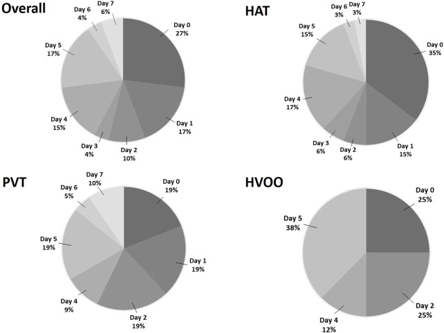
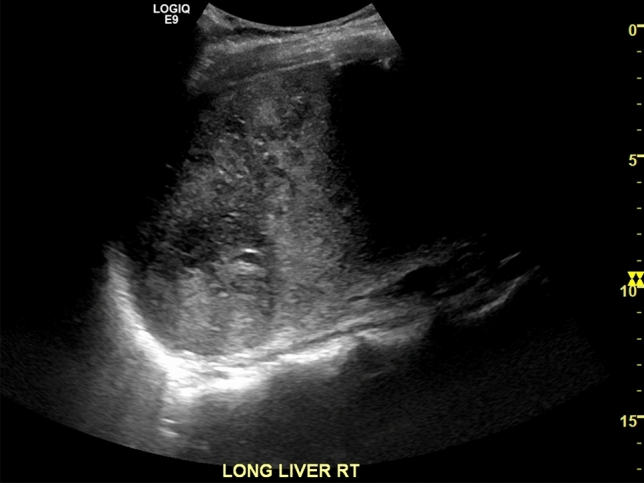
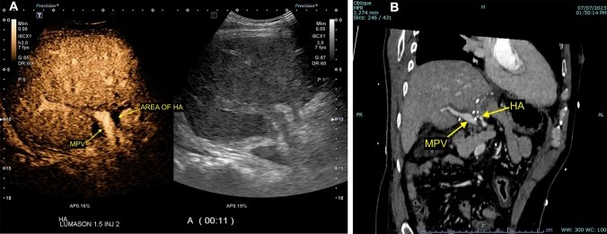
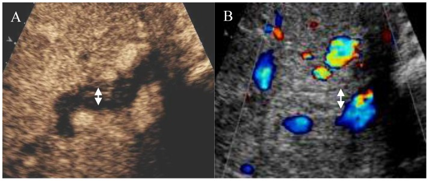
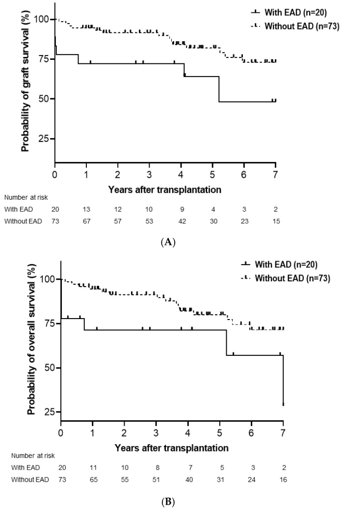

1914 — Suy chức năng mảnh ghép gan sớm (EAD) & mảnh ghép không chức năng nguyên phát (PNF): tiêu chuẩn Olthoff, dấu "dải sáng", và vì sao CĐHA không chẩn đoán EAD / Early allograft dysfunction & primary non-function
Tags: pattern:suy-manh-ghep pattern:nhoi-mau-gan pattern:ngam-khong-dong-nhat pattern:hoai-tu-duong-mat pattern:ap-xe-gan pattern:giai-doan-ngam-thuoc vung:gan vung:duong-mat vung:mieng-noi score:Olthoff-EAD score:RI protocol:Doppler protocol:CEUS protocol:CTA-3-thi protocol:MRCP protocol:sinh-thiet-gan
Mức chắc chắn (certainty): tổng hợp y văn (literature synthesis) — số liệu lấy từ 5 bài open-access đã đọc toàn văn: Shin & Suh, Medicina (Kaunas) 2025 (PMC12471369, CC BY 4.0 — 93 ca, tiêu chuẩn EAD và yếu tố nguy cơ); Minciuna et al., Transpl Int 2023 (PMC10716223, CC BY 4.0 — 708 ca, thời điểm biến chứng mạch máu sớm); Chau et al., Abdom Radiol 2025 (PMC11794643, CC BY 4.0 — dấu "dải sáng", CEUS phân biệt nhồi máu/áp-xe); Zhang et al., PLoS One 2014 (PMC4156319, CC BY 4.0 — CEUS đường mật trong ITBL); Saparbay et al., J Clin Med 2026 (PMC13467232, CC BY 4.0 — meta bơm tưới máy, tiêu chuẩn Olthoff); Tang et al., Front 2024 (PMC10793758, CC BY 4.0 — meta HOPE). Bài không có ca nguyên văn riêng của nhóm.
Câu hỏi gốc của bài: bệnh nhân ngày 7 sau ghép gan, vàng da tăng, bilirubin 14 mg/dL, INR 1,9, AST đã về gần bình thường; siêu âm mạch máu bình thường, CT không có ổ dịch. Vậy: đây là EAD, PNF, thải ghép cấp, hay một biến chứng mạch–mật đang bị bỏ sót? và CĐHA phải làm gì — chẩn đoán, hay chỉ loại trừ? Điểm tựa: EAD/PNF là chẩn đoán SINH HÓA, không phải chẩn đoán hình ảnh. CĐHA không đo được chức năng gan; việc của nó là loại trừ nguyên nhân ngoại khoa có thể chữa được (hẹp/tắc động mạch gan, tắc tĩnh mạch cửa, hẹp dòng ra, hẹp đường mật, áp-xe) và phát hiện tổn thương nhu mô không hồi phục (nhồi máu, hoại tử đường mật) để quyết định theo dõi hay ghép lại.
1. Tổng quan — vì sao mảnh ghép "suy sớm", và vì sao ảnh chỉ đứng ở hàng thứ hai
A. Bệnh học (pathology) và cơ chế:
- Định nghĩa EAD (tiêu chuẩn Olthoff, 2010): có ≥ 1 trong ba tiêu chí — bilirubin ≥ 10 mg/dL vào ngày 7, INR ≥ 1,6 vào ngày 7, hoặc ALT/AST > 2.000 IU/L trong 7 ngày đầu (PMC12471369; PMC13467232). Đây là tiêu chuẩn sinh hóa, cố ý không dựa trên hình ảnh.
- Định nghĩa PNF (primary non-function): mảnh ghép không bao giờ đạt chức năng, thường phải ghép lại trong 7 ngày đầu. Không có tiêu chuẩn sinh hóa thống nhất giữa các nghiên cứu — vì vậy khi đọc y văn phải xem định nghĩa của từng bài, không gộp số.
- Sinh lý bệnh: tổn thương thiếu máu–tái tưới máu (ischemia–reperfusion injury) → giảm ATP, rối loạn bơm ion, tế bào gan trương phồng → chèn ép xoang gan và "no-reflow" (dòng không tái lập đủ ở vi tuần hoàn) → ngấm thuốc chậm/không đồng nhất; đồng thời bạch cầu và Kupffer cell hoạt hóa gây viêm nhu mô. Đường mật chịu thiếu máu sớm nhất (chỉ có nguồn động mạch) → hoại tử biểu mô mật, hẹp đường mật thiếu máu (ITBL) xuất hiện hàng tuần đến hàng tháng sau.
- Vì sao EAD không đồng nghĩa với "mảnh ghép hỏng": EAD là phổ liên tục từ "chậm hồi phục" tới "suy nặng"; phần lớn hồi phục nếu không có nguyên nhân mạch–mật. Nhưng EAD là yếu tố tiên lượng độc lập: trong 93 ca, EAD 21,5%, làm giảm sống mảnh ghép (p = 0,021) và sống bệnh nhân (p = 0,027) (PMC12471369).
- Yếu tố nguy cơ định lượng (93 ca, PMC12471369): suy gan cấp trước ghép OR 6,228 (1,179–32,906), p = 0,031; tuổi người cho OR 1,051 mỗi năm (1,008–1,096), p = 0,020; thời gian thiếu máu ấm OR 1,048 mỗi phút (1,001–1,098), p = 0,046.
- Vì sao phải chụp mạch trong 7 ngày đầu: biến chứng mạch máu tập trung ngay tuần đầu — POD 0: 26,9%, POD 1: 17,3%, POD 5: 17,3%; HAT được chẩn đoán trung vị ngày 4, PVT ngày 47, HVOO ngày 21 (PMC10716223). Một ca "EAD" không loại trừ mạch có thể chỉ là HAT được phát hiện muộn.
- Vì sao RI cao ngay sau ghép không phải bệnh: phù mảnh ghép → RI > 0,8 ở ~50% trong 3 ngày đầu, bình thường hóa ~ngày 4 (PMC6694376, dùng cho bài 1913). Vì vậy "EAD + RI cao" ở ngày 1–3 không đủ để kết luận hẹp mạch.
- Vì sao bơm tưới máy (machine perfusion) làm giảm EAD: rửa và cấp oxy trong bảo quản → giảm ATP depletion và giảm hoạt hóa viêm → tổn thương tái tưới máu nhẹ hơn. Meta 21 nghiên cứu/3.665 ca: MP vs bảo quản lạnh tĩnh (SCS) giảm EAD RR 0,67 (0,48–0,94), p = 0,020, PNF RR 0,31 (0,11–0,84), p = 0,020, mất mảnh ghép 1 năm RR 0,54 (0,36–0,81), p = 0,003; hiệu quả tập trung ở HMP/HOPE (EAD RR 0,66; PNF RR 0,23), còn NMP chưa đạt ý nghĩa cho hai đích này (PMC13467232). Meta HOPE riêng (11 nghiên cứu, 5 RCT, 1.000 ca): EAD RR 0,54, hẹp mật không miệng nối (NAS) RR 0,34, biến chứng mật RR 0,74, ghép lại RR 0,42, mất mảnh ghép 1 năm RR 0,38; PNF RR 0,54 không đạt ý nghĩa (PMC10793758).
B. Ngưỡng định lượng bắt buộc (cửa 1 Argon):
| Đại lượng | Con số đã kiểm chứng | Ý nghĩa thực hành |
|---|---|---|
| EAD — tiêu chuẩn Olthoff | bilirubin ≥ 10 mg/dL ngày 7 HOẶC INR ≥ 1,6 ngày 7 HOẶC ALT/AST > 2.000 IU/L trong 7 ngày (PMC12471369; PMC13467232) | Chỉ cần 1 tiêu chí; không dùng hình ảnh để chẩn đoán |
| Tần suất EAD | 21,5% (20/93) (PMC12471369) | Con số tham chiếu khi đọc các loạt khác |
| Tiên lượng của EAD | sống mảnh ghép p = 0,021, sống bệnh nhân p = 0,027 (độc lập) (PMC12471369) | EAD không phải "biến cố lành tính" |
| Nguy cơ EAD — suy gan cấp trước ghép | OR 6,228 (1,179–32,906), p = 0,031 (PMC12471369) | Bệnh nhân nặng trước mổ → cảnh giác cao |
| Nguy cơ EAD — tuổi người cho | OR 1,051/năm (1,008–1,096), p = 0,020 (PMC12471369) | Mỗi 10 năm tuổi cho ≈ +65% nguy cơ (theo mô hình) |
| Nguy cơ EAD — thiếu máu ấm | OR 1,048/phút (1,001–1,098), p = 0,046 (PMC12471369) | Mỗi 10 phút ≈ +60% nguy cơ (theo mô hình) |
| PNF | mảnh ghép không đạt chức năng, thường ghép lại ≤ 7 ngày; không có định nghĩa sinh hóa thống nhất | Không gộp số giữa các nghiên cứu khác định nghĩa |
| Biến chứng mạch trong tuần đầu | HAT 7,1%, PVT 8,2%, HVOO 3,1% (708 ca); POD 0: 26,9%, POD 1: 17,3%, POD 5: 17,3% (PMC10716223) | "EAD" phải được loại trừ mạch trước khi quy cho nhu mô |
| Thời điểm chẩn đoán | HAT trung vị 4 ngày; PVT 47 ngày; HVOO 21 ngày (PMC10716223) | Lịch Doppler phải phủ ngày 0, 1, 7 |
| RI sau ghép | > 0,8 ở ~50% trong 3 ngày đầu, bình thường hóa ngày 4 (PMC6694376) | Không can thiệp chỉ vì RI cao sớm |
| Nhồi máu gan | gắn với tắc động mạch trong 85% ca (PMC6694376) | Thấy nhồi máu → đi tìm tắc mạch |
| Bơm tưới máy (MP) vs SCS | 21 nghiên cứu/3.665 ca: EAD RR 0,67, PNF RR 0,31, mất ghép 1 năm RR 0,54; HMP/HOPE: EAD RR 0,66, PNF RR 0,23 (PMC13467232) | Cải thiện chức năng sớm là có thật, không phải hiệu ứng hình ảnh |
| HOPE (meta riêng) | 11 nghiên cứu/1.000 ca: EAD RR 0,54, NAS RR 0,34, ghép lại RR 0,42; PNF RR 0,54 (không ý nghĩa) (PMC10793758) | HOPE giảm EAD và hẹp mật, chưa chứng minh giảm PNF |
| ITBL & CEUS đường mật | thành ống mật rốn gan ngấm mạnh bình thường ↔ ngấm kém khi ITBL; sống mảnh ghép 1 năm 78,4% vs 92,9%, 3 năm 53,2% vs 78,6% (p = 0,008) (PMC4156319) | Hậu quả muộn của tổn thương thiếu máu |
C. TẠI SAO ảnh trông như vậy (vật lý hình ảnh):
- CT: tín hiệu ∝ nồng độ iod trong nhu mô. Mảnh ghép tổn thương nặng: ngấm chậm, đỉnh thấp, không đồng nhất ("patchy"), phù nhu mô (giảm tỷ trọng lan tỏa), hẹp xoang gan do tế bào trương phồng → đây là hình ảnh của "no-reflow", không phải khối u. Không có ngưỡng HU được các nguồn xác nhận cho "EAD" → bài không đưa số HU.
- Nhồi máu trên CT: vùng giảm ngấm hình địa lý, bờ theo phân thùy, không hiệu ứng khối; khi hoại tử hóa lỏng/nhiễm khí → ổ dịch + khí.
- Siêu âm B-mode: nhồi máu = vùng giảm âm bờ không rõ; "dấu dải sáng" (bright band sign) = nhiều dải tăng âm thẳng cắt ngang vùng giảm âm, do phản xạ gương từ các bó cửa còn nguyên trong vùng hoại tử — gợi ý nhồi máu hơn là áp-xe (PMC11794643).
- CEUS: vi bọt khí thuần lòng mạch → thấy tưới máu thật. Nhồi máu: giảm ngấm ở CẢ thì động mạch và thì muộn; áp-xe: viền ngấm thì động mạch hoặc kiểu "honeycomb" (PMC11794643). Đây là cách phân biệt hai bệnh cảnh điều trị hoàn toàn khác nhau.
- CEUS đường mật (ITBL): thành ống mật không ngấm ở thì động mạch = mất mạng mao mạch quanh mật; bình thường thành ống mật ngấm mạnh (PMC4156319).
- MRI/MRCP: dịch mật tăng T2 → thấy hẹp/giãn đường mật; mảng nhồi máu T1 giảm, T2 tăng, hạn chế khuếch tán ở thể cấp (phù độc tế bào), không ngấm sau tiêm.
2. Mẫu hình + chẩn đoán phân biệt theo vị trí (Gamut)
Gamut xếp theo cái gì đang hỏng, vì quyết định là theo dõi, can thiệp, hay ghép lại:
- Mẫu A — EAD "thuần túy" (chỉ sinh hóa): men gan/bilirubin/INR đạt tiêu chuẩn Olthoff nhưng mạch thông, không ứ mật, không ổ dịch. Hình ảnh có thể bình thường hoặc chỉ phù nhẹ. Điều trị: nội khoa, theo dõi.
- Mẫu B — PNF / nhồi máu lan tỏa: mảnh ghép không ngấm đủ, phù toàn bộ, có thể dải sáng trên siêu âm, toan chuyển hóa, không có mật. Điều trị: ghép lại.
- Mẫu C — nhồi máu KHU TRÚ theo lãnh thổ: vùng giảm ngấm hình nêm/theo phân thùy + bằng chứng tắc/hẹp mạch (HAT, HAS, steal). Điều trị: theo nguyên nhân mạch (xem bài 1913).
- Mẫu D — hẹp đường mật thiếu máu (ITBL): nhiều ổ hẹp trong gan, không ở miệng nối, kèm tắc/hẹp động mạch gan hoặc tiền sử thiếu máu kéo dài. Điều trị: nội soi can thiệp lặp lại, cân nhắc ghép lại.
- Mẫu E — nhiễm khuẩn (áp-xe) sau nhồi máu: ổ dịch bờ rõ + khí, viền ngấm; sốt, bạch cầu tăng. Điều trị: dẫn lưu + kháng sinh.
Gợi nhớ 4I: Injury (EAD/PNF) · Infarct (nhồi máu) · Ischemic cholangiopathy (ITBL) · Infection (áp-xe).

*Biểu đồ tròn của 708 ca ghép gan: biến chứng mạch máu tập trung vào ngày mổ và ngày 1 (POD 0: 26,9%, POD 1: 17,3%, POD 5: 17,3%). Đây là lý do không được quy một ca "EAD" cho nhu mô trước khi có Doppler/CEUS trong tuần đầu: cùng một bệnh cảnh sinh hóa, HAT có thể là nguyên nhân và chữa được nếu phát hiện sớm. Nguồn: Minciuna et al., Transpl Int 2023, PMC10716223 Fig. 2, CC BY 4.0.*3. Bảng so sánh phân biệt (ma trận đối chiếu)
| Thực thể (entity) | Hình ảnh điển hình | Chốt vào (rule-in) | Chốt loại (rule-out) | Gợi ý xác nhận |
|---|---|---|---|---|
| EAD (suy chức năng sớm) | Thường bình thường hoặc phù nhẹ, ngấm hơi không đồng nhất; mạch thông, không ứ mật | Đạt tiêu chuẩn Olthoff (bilirubin ≥ 10 mg/dL hoặc INR ≥ 1,6 ngày 7, hoặc ALT/AST > 2.000 IU/L) + mạch–mật đã loại trừ | Có tắc/hẹp mạch hoặc hẹp đường mật → không gọi là EAD thuần túy | Sinh hóa ngày 1–7; Doppler POD 0/1/7; CEUS/CTA khi bất thường |
| PNF (không chức năng nguyên phát) | Mảnh ghép ngấm kém lan tỏa, phù, không có mật; có thể dải sáng | Không đạt chức năng + phải ghép lại ≤ 7 ngày; toan chuyển hóa, không có mật | Có mật, INR giảm dần, men gan giảm → không phải PNF | Theo dõi sát; loại trừ HAT/PVS/HVOO trước khi kết luận |
| HAT (huyết khối động mạch gan) | Mất tín hiệu màu; phổ "water-hammer"; nhồi máu hình địa lý; CEUS cụt đột ngột | Khuyết thuốc trong lòng mạch trên CTA + không ngấm đoạn xa | Phổ và màu bình thường ở nhánh trong gan → loại trừ | CTA ≤ 1 mm; CEUS; DSA (bài 1913) |
| Tắc/hẹp tĩnh mạch cửa | Tĩnh mạch cửa không thấy/khuyết thuốc, gan giảm ngấm, cổ trướng | Khuyết thuốc tĩnh mạch cửa + giãn mạch bàng hệ | Cửa thông, phổ cửa liên tục → loại trừ | Doppler cửa; CTV; (bài 1909) |
| HVOO (hẹp dòng ra) | Gan ngấm không đồng nhất + periportal collar, tĩnh mạch gan giãn, đậm hơn IVC, mất sóng ba pha | Chênh áp HV–IVC ≥ 5 mmHg; tỉ lệ vận tốc > 4:1 | Ba pha liên tục + chênh áp ≤ 3 mmHg → loại trừ | Venography + đo áp (bài 1906) |
| ITBL (hẹp đường mật thiếu máu) | Nhiều ổ hẹp trong gan, KHÔNG ở miệng nối; giãn mật từng đoạn; thành ống mật ngấm kém trên CEUS | Nhiều ổ hẹp trong gan + tiền sử thiếu máu/HAT/HAS | Một ổ hẹp tại miệng nối, bờ nhẵn → hẹp miệng nối lành tính (bài 133) | MRCP; CEUS đường mật; ERCP/PTC |
| Áp-xe gan | Ổ dịch bờ rõ, khí trong ổ, viền ngấm/honeycomb trên CEUS | Viền ngấm + khí + sốt, bạch cầu tăng | Giảm ngấm cả hai thì, không viền → nhồi máu | CEUS; chọc hút/dẫn lưu |
| Thải ghép cấp (ACR) | Gan to, phù, tăng tín hiệu T2, giảm ngấm thì tĩnh mạch; không có tắc mạch | Sinh thiết (tiêu chuẩn vàng) + men gan tăng, mạch–mật đã loại trừ | Không có thâm nhiễm/hoại tử trên mô → không ACR | Sinh thiết gan; theo dõi đáp ứng corticoid |

Vùng nhu mô giảm âm bờ không rõ, trong đó có nhiều dải tăng âm thẳng ("bright band sign") — do phản xạ gương từ các bó cửa còn nguyên nằm trong vùng nhồi máu. Dấu này gợi ý nhồi máu hơn là áp-xe; trên CEUS, nhồi máu giảm ngấm cả hai thì, còn áp-xe có viền ngấm/honeycomb. Nguồn: Chau et al., Abdom Radiol 2025, PMC11794643 Fig. 5, CC BY 4.0.4. Protocol chụp + hệ phân độ/ngưỡng xử trí
A. Sinh hóa — chẩn đoán EAD/PNF (làm trước, không thay thế bằng ảnh):
- Ngày 1–7: AST, ALT, bilirubin, INR hằng ngày; thêm lactate, glucose, amoniac khi nghi suy nặng.
- Chốt EAD ngày 7 theo Olthoff (1 trong 3 tiêu chí); ghi rõ tiêu chí nào để so sánh giữa các ca.
- PNF: không có tiêu chuẩn thống nhất → ghi rõ định nghĩa dùng (ví dụ "ghép lại ≤ 7 ngày").
B. Hình ảnh — thứ tự và mục đích:
- Doppler + CEUS: POD 0, 1 và 7 (theo mô hình rDUS), thêm chỉ định đột xuất khi men gan tăng/vàng da/sốt. Bắt buộc ghi: RI trong gan, hình dạng phổ, PSV miệng nối, phổ tĩnh mạch cửa và tĩnh mạch gan, nhu mô (vùng giảm âm, dải sáng, ổ dịch/khí).
- CEUS ngay khi Doppler bất thường hoặc không kết luận: phân biệt nhồi máu (giảm ngấm cả hai thì) với áp-xe (viền/honeycomb), xác nhận cụt động mạch.
- CTA 3 thì lát ≤ 1 mm + MPR/MIP/VR khi nghi tắc/hẹp mạch; luôn đọc cả tĩnh mạch cửa và tĩnh mạch gan.
- MRCP khi bilirubin tăng mà không có nguyên nhân mạch: tìm hẹp đường mật (phân biệt miệng nối với ITBL nhiều ổ trong gan).
- Sinh thiết gan khi đã loại trừ mạch–mật mà men gan vẫn tăng: phân biệt thải ghép cấp với tổn thương bảo quản.
C. Ngưỡng xử trí:
| Tình huống | Hành động |
|---|---|
| Đạt Olthoff nhưng mạch–mật bình thường | EAD → nội khoa, theo dõi sinh hóa, không can thiệp mạch |
| Không có mật + toan + không ngấm | Nghi PNF → hội chẩn ghép lại, song song loại trừ HAT/PVS/HVOO |
| Có tắc/hẹp mạch | Điều trị theo bài 1913 (nong bóng/stent/ghép lại) — không gọi là EAD |
| Nhồi máu khu trú không nhiễm | Theo dõi, kiểm tra mạch; dẫn lưu chỉ khi có ổ dịch/khí |
| Nhiều ổ hẹp đường mật trong gan (ITBL) | ERCP/PTC lặp lại, cân nhắc ghép lại khi tái hẹp |
| Men gan tăng, mạch–mật loại trừ | Sinh thiết để tìm thải ghép cấp |
D. Sơ đồ quyết định:
flowchart TD
A[Ngay 1 den 7 sau ghep: AST ALT bilirubin INR] --> B{Dat tieu chuan Olthoff}
B -->|Khong| C[Theo doi sinh hoa, Doppler theo lich]
B -->|Co| D[Doppler POD 0 1 7: RI pho dong mach cua tinh mach gan]
D -->|Bat thuong hoac khong ket luan| E[CEUS: nhoi mau hay ap xe, dong dong mach that hay cut]
E -->|Nghi tac hoac hep mach| F[CTA lat 1 mm + MPR]
D -->|Binh thuong| G{Bilirubin tang troi}
G -->|Co| H[MRCP: hep mieng noi hay ITBL nhieu o trong gan]
G -->|Khong| I[Loai tru thai ghep cap: sinh thiet gan]
F -->|Tac hoac hep| J[Dieu tri theo bai 1913]
H -->|ITBL| K[ERCP PTC lap lai, can nhac ghep lai]
I -->|Thai ghep cap| L[Corticoid, chinh uc che mien dich]
E -->|Nhoi mau lan toa, khong co mat, toan chuyen hoa| M[PNF: hoi chan ghep lai]
5. Biến thể bình thường và cạm bẫy
A. Biến thể bình thường (normal variant):
- Men gan tăng rất cao trong 24–48 giờ đầu rồi giảm nhanh là diễn tiến bình thường sau tái tưới máu — không đạt tiêu chí EAD nếu ngày 7 đã về.
- RI > 0,8 trong 3 ngày đầu ở ~50% bệnh nhân (phù mảnh ghép) — bình thường hóa ngày 4.
- Ngấm thuốc không đồng nhất nhẹ ở thì động mạch ngay sau tái tưới máu — chỉ có giá trị khi kéo dài sang thì cửa/muộn hoặc có ổ giảm ngấm rõ.
- Giãn nhẹ đường mật trong gan ở mảnh ghép nhỏ/trái có thể do thay đổi giải phẫu, không phải tắc.
- Dịch quanh gan ít, tự hết sau mổ — không phải ổ nhiễm.
B. Cạm bẫy (pitfall):
- Gọi "EAD" rồi bỏ qua mạch: biến chứng mạch tập trung POD 0–5; HAT chẩn đoán trung vị ngày 4 — một ca EAD không Doppler đúng lịch có thể là HAT bị bỏ sót.
- Gọi "PNF" khi chưa loại trừ HVOO/PVS: mảnh ghép ngấm kém do ứ huyết dòng ra cũng giống PNF; phải đo chênh áp trước khi kết luận không hồi phục.
- Nhầm nhồi máu với áp-xe: cả hai giảm âm/giảm ngấm; dải sáng + giảm ngấm cả hai thì = nhồi máu; viền ngấm + khí = áp-xe.
- Bỏ sót ITBL vì "chỉ hẹp nhẹ": ITBL là nhiều ổ hẹp trong gan, khác hẹp một ổ tại miệng nối; điều trị và tiên lượng khác hẳn.
- Dùng hình ảnh để "chấm điểm" EAD: không có ngưỡng HU/ADC nào được xác nhận cho EAD — đừng bịa ngưỡng; EAD vẫn là chẩn đoán sinh hóa.
- Quên sinh thiết khi mọi thứ "âm tính": men gan tăng kéo dài với mạch–mật bình thường thường là thải ghép cấp — chẩn đoán bằng mô học.
- "Satisfaction of search": thấy nhồi máu rồi không đọc mạch; nhồi máu gắn tắc động mạch 85% — luôn đi tìm nguyên nhân.
- So sánh số EAD giữa các nghiên cứu mà không đọc định nghĩa: tiêu chuẩn Olthoff khác các định nghĩa cũ (chỉ AST) → không gộp số.
6. Tự lượng giá — Blind Quiz
Ca 1 — Bệnh nhân ngày 5 sau ghép gan, sốt, men gan tăng; siêu âm thấy vùng giảm âm trong gan.
- Hỏi: (1) mô tả dấu hiệu trong vùng giảm âm; (2) dấu này gợi ý gì và loại trừ gì? (3) bước tiếp theo?
Bấm để hiện đáp án (findings + chẩn đoán)
- (1) Vùng giảm âm bờ không rõ chứa nhiều dải tăng âm thẳng = "dấu dải sáng" (bright band sign).
- (2) Gợi ý nhồi máu nhu mô (dải sáng do phản xạ từ bó cửa còn nguyên), ít gặp trong áp-xe → giúp loại trừ áp-xe; nhưng không loại trừ nhiễm khuẩn trên nền nhồi máu.
- (3) CEUS: nhồi máu giảm ngấm cả hai thì; áp-xe viền ngấm/honeycomb. Đồng thời CTA/Doppler động mạch gan vì nhồi máu gắn tắc động mạch 85%.
- Nguồn: Chau et al., Abdom Radiol 2025, PMC11794643 Fig. 5, CC BY 4.0.
Ca 2 — Bệnh nhân ngày 5 sau ghép, men gan tăng; siêu âm nghi giảm tưới máu.

- Hỏi: (1) hai khung cho thấy gì? (2) vì sao ca này không được gọi là "EAD"? (3) nguyên tắc chung?
Bấm để hiện đáp án
- (a) CEUS: nhu mô ngấm sớm qua tĩnh mạch cửa, động mạch gan ngấm muộn và cụt; (b) CT có cản quang: khuyết thuốc trong động mạch gan → huyết khối động mạch gan (HAT).
- (2) Vì đã tìm được nguyên nhân ngoại khoa có thể chữa; "EAD" chỉ là mô tả chức năng, không phải chẩn đoán cuối. Gọi EAD ở đây sẽ bỏ qua can thiệp mạch.
- (3) Nguyên tắc: EAD là chẩn đoán sinh hóa; CĐHA để LOẠI TRỪ mạch–mật và tìm tổn thương nhu mô.
- Nguồn: Chau et al., Abdom Radiol 2025, PMC11794643 Fig. 2, CC BY 4.0.
Ca 3 — Bệnh nhân 6 tháng sau ghép, vàng da tăng dần, không sốt; MRCP thấy hẹp đường mật.

- Hỏi: (1) thành ống mật ngấm thuốc thế nào ở thì động mạch? (2) chẩn đoán và cơ chế? (3) vì sao ca này liên quan tới EAD?
Bấm để hiện đáp án
- (1) Thành ống mật rốn gan ngấm KÉM ở thì động mạch (so với ngấm mạnh ở người không có ITBL).
- (2) Hẹp đường mật thiếu máu (ITBL) — mất mạng mao mạch quanh mật do tổn thương thiếu máu (động mạch gan là nguồn duy nhất của đường mật).
- (3) ITBL là hậu quả muộn của tổn thương thiếu máu–tái tưới máu (cùng cơ chế với EAD) và của HAT/HAS không được nhận ra; loạt dùng CEUS sớm cho sống mảnh ghép 1 năm 92,9% vs 78,4%, 3 năm 78,6% vs 53,2% (p = 0,008).
- Nguồn: Zhang et al., PLoS One 2014, PMC4156319 Fig. 4, CC BY 4.0.
Ca 4 — Cùng đoàn hệ 93 ca: vì sao EAD đáng lo?

- Hỏi: (1) đọc hai đường cong; (2) EAD có phải yếu tố tiên lượng độc lập? (3) ba yếu tố nguy cơ định lượng?
Bấm để hiện đáp án
- (1) Đường cong sống mảnh ghép (A) và sống bệnh nhân (B) của nhóm EAD thấp hơn rõ so với không EAD (p = 0,003 ở phân tích đơn biến của bài).
- (2) Có — EAD là yếu tố độc lập cho sống mảnh ghép p = 0,021 và sống bệnh nhân p = 0,027.
- (3) Suy gan cấp trước ghép OR 6,228 (1,179–32,906); tuổi người cho OR 1,051/năm; thiếu máu ấm OR 1,048/phút.
- Nguồn: Shin & Suh, Medicina (Kaunas) 2025, PMC12471369 Fig. 1, CC BY 4.0.
Bài liên quan chéo
- 1913 – Hẹp & huyết khối động mạch gan sau ghép gan — bước loại trừ bắt buộc của mọi ca "EAD"; phổ tardus-parvus, water-hammer, CEUS.
- 1906 – Hẹp dòng ra tĩnh mạch gan sau ghép (HVOO) — nguyên nhân ứ huyết bắt chước PNF.
- 1909 – Hẹp–tắc tĩnh mạch cửa sau ghép gan — PVT 8,2% trong tuần đầu, cùng nhóm "suy mảnh ghép sớm".
- 1910 – Hội chứng tắc xoang gan (SOS/VOD) — gan ngấm không đồng nhất không do tắc mạch.
- 133 – Hẹp miệng nối & cholangiopathy thiếu máu sau ghép gan — phân biệt hẹp miệng nối với ITBL nhiều ổ trong gan.
- 196 – HPS tồn tại sau ghép gan — biến chứng sau ghép khác, cần phân biệt khi khó thở + giảm oxy.
- 1908 – Thiếu máu mạc treo cấp–mạn & bóc tách động mạch tạng — cùng nguyên lý "giảm ngấm = thiếu máu".
Ảnh
- 5 ảnh, tải từ PMC CDN của PubMed Central (bài open access), không chỉnh sửa pixel; nguồn + giấy phép từng file trong
images/CREDITS.md. - Tên file:
1914_<nội dung>_<Modality>_PMCxxxxx-fN.jpg; không tạo ảnh ghép: các ảnh của bài là biểu đồ sống còn/thời điểm và siêu âm đơn khung, không cùng chuỗi xung để đối chiếu trước–sau. - Ảnh không tải: Radiopaedia (chỉ dẫn link), AuntMinnie (chỉ dẫn link), các bài không rõ giấy phép — xem
sources.md.
Không dùng để chẩn đoán độc lập khi chưa có người hướng dẫn.